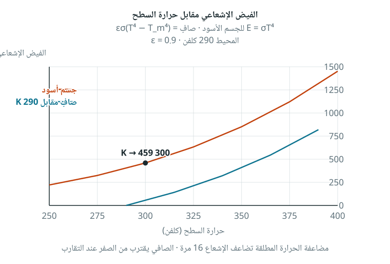

الإشعاع الحراري
Thermal Radiation
انتقال طاقة بموجات كهرمغنطيسية تنبعث من المادة بحرارتها، ولا يحتاج وسطًا. يحدّد قانون ستيفان–بولتزمان الفيض: E = εσT⁴، فجسم أسود عند 300 كلفن يشع 459 W/m²، والأس الرابع يضخّم الفروق.
الإشعاع الحراري انتقال طاقة بموجات كهرمغنطيسية تنبعث من المادة بسبب حرارتها، ولا يحتاج وسطًا ماديًّا. كل جسم فوق الصفر المطلق يشع، ويشع في نطاق من الأطوال الموجية يتحدّد بدرجة حرارته. عند درجات حرارة الغرف يقع معظم الإشعاع في تحت الأحمر المتوسط والبعيد، بين 5 و50 ميكرومترًا.
يقيس قانون ستيفان–بولتزمان الفيض المنبعث من جسم أسود: E_b = σT⁴، حيث σ = 5.670×10⁻⁸ W/(m²·K⁴). الأس الرابع يجعل الفروق كبيرة: مضاعفة الحرارة المطلقة تضاعف الإشعاع 16 مرة. والجسم الحقيقي يوصف بجسم رمادي بانبعاثية ε: E = εσT⁴، وقيمة ε محصورة بين صفر وواحد.
في التبادل بين جسمين يتحدّد الصافي بفرق T⁴ بينهما بعامل الشكل الهندسي؛ ولهذا يبرد الجسم سريعًا حين يكون محيطه أبرد، ويقترب من التوازن حين يتساوى الطرفان.
كيف تعمل الظاهرة؟
ينشأ الإشعاع من تسارع الشحنات داخل المادة: اهتزاز الأيونات وإثارة الإلكترونات يولّدان مجالًا كهرمغنطيسيًّا متغيّرًا ينتشر في الفراغ. توزيع الطاقة على الأطوال الموجية يعطيه قانون بلانك، وذروة التوزيع تزحف نحو الأطوال القصيرة مع ارتفاع الحرارة وفق قانون فين، λ_max·T ≈ 2,898 ميكرومتر·كلفن. تكامل بلانك على كل الأطوال يعطي σT⁴. والانبعاثية تقيس كفاءة السطح في هذا الإصدار مقابل الجسم الأسود، وتنخفض في المعادن اللامعة لأن الإلكترونات الحرة تعكس معظم الإشعاع الساقط.
العلاقة بالأرقام
عند 300 K: E_b = 5.670×10⁻⁸ × 300⁴ = 459 W/m². وعند 350 K: 851 W/m²، أي 1.85 مرة مقابل 1.17 مرة في الحرارة المطلقة. ولسطح انبعاثيته 0.9 في محيط 290 K: q″ = εσ(T⁴ − T_m⁴) = 0.9 × 5.670×10⁻⁸ × (8.1×10⁹ − 7.07×10⁹) ≈ 52 W/m². وفي الطرف الآخر من السلّم يشع سطح الشمس عند 5,800 K نحو 6.4×10⁷ W/m²، ويصل إلى أعلى الغلاف الجوي 1,361 W/m² بعد التشتّت الهندسي.
مفاهيم متقاربة
الخلط الأول: اعتبار الإشعاع حرارة تنتقل بالهواء الساخن؛ الإشعاع مستقل عن الوسط، ولهذا تصل حرارة الشمس عبر الفراغ. الثاني: الخلط بين الانبعاثية والامتصاصية في الأجسام غير الرمادية؛ للأجسام الرمادية ε = α بحسب كيرشهوف، لكن السطوح المنتقاة كالزجاج والطلاءات تمتصّ في نطاق وتعكس في آخر، فتصبح ε وα مختلفين. الثالث: الظن أن اللون وحده يكفي؛ السطح الأبيض العازل يعكس الضوء المرئي وقد يكون مرتفع الانبعاثية في تحت الأحمر فيبرد ليلًا كسطح أسود.
حدود التطبيق
قانون ستيفان–بولتزمان دقيق للجسم الأسود وتقريب للرمادي. الانبعاثية تعتمد على الطول الموجي والاتجاه والخشونة والحرارة، وقيمة جدولية واحدة قد تخطئ 30%. في الغازات المشاركة كبخار الماء وثاني أكسيد الكربون يصبح التبادل انتقائيًّا بالنطاقات ولا يكفي نموذج الجسم الرمادي، فيلزم نموذج نطاقات أو حزمة أشعة. وعند المسافات القصيرة أو وجود دخان ولهب يصبح الوسط مشاركًا. وفي الأجسام الشفافة لبعض الأطوال يمرّ الإشعاع ويُحتسب التبادل في الحجم لا على السطح.

| الكمية | القيمة | المصدر |
|---|---|---|
| ثابت ستيفان–بولتزمان | 5.670×10⁻⁸ W/(m²·K⁴) | [2] |
| فيض جسم أسود عند 300 كلفن | 459 W/m² | [2] |
| فيض جسم أسود عند 350 كلفن | 851 W/m² | [2] |
| صافي التبادل لسطح ε = 0.9 في محيط 290 كلفن | 52 W/m² | [2] |
| فيض سطح الشمس عند 5,800 كلفن | 6.4×10⁷ W/m² | [3] |
المصادر
- 1 Emissivity Coefficients of Common Materials — The Engineering ToolBox. www.engineeringtoolbox.com/emissivity-coefficients-d_447.html · اطُّلع عليه 2026-11-16
- 2 University Physics Volume 2 — 1.6 Mechanisms of Heat Transfer — OpenStax. openstax.org/books/university-physics-volume-2/pages/1-6-mechanisms-of-heat-transfer · اطُّلع عليه 2026-11-16
- 3 Sun — NASA Science. science.nasa.gov/sun/ · اطُّلع عليه 2026-11-16
استشهد بهذا المصطلح
الصيغتان مبنيتان من بيانات الصفحة نفسها: العنوان والتاريخ ورابط النسخة المنشورة.
الإشعاع الحراري — Thermal Radiation. (2026). ديوان المعرفة — انفراد. https://infiradev.com/diwan/terms/radiation-heat.html
@misc{radiation-heat2026,
title = {الإشعاع الحراري},
titleaddon = {Thermal Radiation},
howpublished = {{ديوان المعرفة — انفراد} — مرجع علمي عربي},
year = {2026},
url = {https://infiradev.com/diwan/terms/radiation-heat.html},
urldate = {2026-11-16},
note = {مراجعة علمية: مراجعة آلية — ديوان المعرفة (روابط المصادر + عقد المحتوى + وجود الرسم) 2026-11-16}
}
راجعه: مراجعة آلية — ديوان المعرفة (روابط المصادر + عقد المحتوى + وجود الرسم) 2026-11-16 · 2026-11-16 · آخر تحديث 2026-11-16